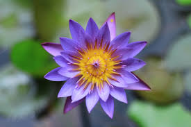

Bunga atau kembang (bahasa Latin: flos) adalah alat reproduksi pada tumbuhan berbunga
Bunga disebut juga divisio Magnoliophyta atau Angiospermae,
pada bunga terdapat organ reproduksi, yaitu benang sari dan putik.
 Bunga dapat muncul secara tunggal maupun bersama-sama dalam satu rangkaian
Bunga yang muncul secara bersama-sama disebut sebagai bunga majemuk atau inflorescence
Pada beberapa spesies, bunga majemuk dapat dianggap awam sebagai bunga (tunggal), misalnya pada Anthurium dan bunga matahari
Satuan bunga yang menyusun bunga majemuk disebut floret.
Bunga dapat muncul secara tunggal maupun bersama-sama dalam satu rangkaian
Bunga yang muncul secara bersama-sama disebut sebagai bunga majemuk atau inflorescence
Pada beberapa spesies, bunga majemuk dapat dianggap awam sebagai bunga (tunggal), misalnya pada Anthurium dan bunga matahari
Satuan bunga yang menyusun bunga majemuk disebut floret.